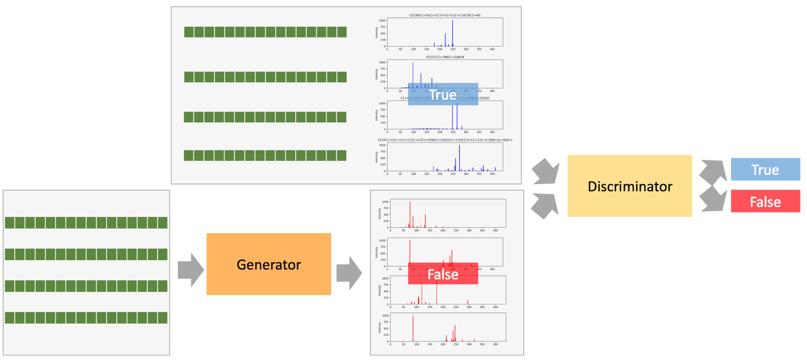

ASAP
Antibody Sequence Analysis Pipeline (ASAP) is a pipeline to identify distinguishing features in targeting antibody set when compared to a reference non-targeting set. The pipeline first extracts germline, CDR canonical structure, isoelectric point and frequent positional motifs features from sequences and creates an antibody feature fingerprint. Machine-learning and statistical significance testing are applied to antibody sequences and feature fingerprints to identify distinguishing feature values and combinations thereof. When applied to an MMP-targeting set, ASAP identifies salient features and recommends features to use when designing novel MPP-targeting antibody sequences.
Contributor: Xinmeng Li, James Van Deventer, Soha Hassoun

MetGAN
MetGAN is a conditional generative adversarial network generated for metabolite mass spectra data prediction. A specific metabolite may have various mass spectra data correspond to it, due to different experimental conditions. GAN is a desirable framework to train a generator that takes one input and predicts multiple outputs. We further boost the generator performance of GAN by introducing the conditional GAN, negative real examples, pre-training and multiple conditional GAN. The trained generator of GAN captures the relationship between the metabolite structures and mass spectra, while the trained discriminator is capable to distinguish true mass spec data from the training set and false mass spectra data output by the generator.
Contributor: Xinmeng Li, Linfeng Liu
Deep Fashion
A deep neural network VGG-19 was applied to determining style of clothes from fashion images. Around 34,000 photos was taken from London, Paris, New York and Milan fashion. Information of the fashion designs were labeled with 250 designers, the year of the show, the type of the clothes, and the season of the year. This neural network designed to be fashion-aimed to classifying these photos into interesting fashion attributions.
Contributor: Xinmeng Li, Hossein Chaghazardi

Pathway Enrichment
Metabolomics-based studies have provided critical insights across many applications including identifying disease biomarkers and associating metabolic responses to drugs. Recent advances in mass spectrometry technology promise to further these discoveries. It is now possible to collect thousands of small molecules collected through untargeted metabolomics. However, determining the identity of each measured mass is challenging. Pathway enrichment compute the enrichment of pathways given a network model of the biological sample and a likelihood score of observing metabolites (nodes) within the network.
Contributor: Vlad Porokhin, Xinmeng Li, Soha Hassoun